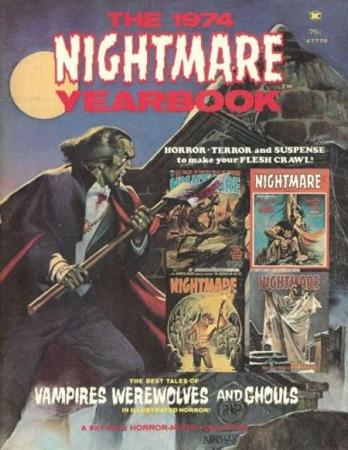

Skywald Publications was an American publisher of black-and-white comics magazines, primarily the horror anthologies Nightmare, Psycho, and Scream. It also published a small line of comic books and other genre magazines.
Skywald's first publication was Nightmare #1 (cover-dated Dec. 1970). The company lasted through the end of 1974 or early 1975, with Psycho #24 (March 1975) being its final publication. Nightmare published 23 issues and Scream put out 11 issues.
The company name is a combination of those of its founders, former Marvel Comics production manager Sol Brodsky ("Sky") and low-budget entrepreneur Israel Waldman ("wald"), whose I. W. Publications (also known as Super Comics) in the late 1950s and early 1960s published unauthorized comic book reprints for sale through grocery and discount stores. Skywald was based in New York City.
Titles
The 1974 Nightmare Yearbook (1974)
1974 Psycho Fall Special (1974)
1974 Psycho Yearbook 1974 1 issues (1 indexed) Gallery April 1974
Blazing Six-Guns [m] 1971 2 issues (2 indexed) Gallery February 1971 - April 1971
The Bravados [m] 1971 1 issues (1 indexed) Gallery August 1971
Butch Cassidy 1971 3 issues (3 indexed) Gallery June 1971 - October 1971
The Crime Machine [m] 1971 2 issues (2 indexed) Gallery February 1971 - May 1971
The Heap [m] 1971 1 issues (1 indexed) Gallery September 1971
Hell Rider [m] 1971 2 issues (2 indexed) Gallery July-August 1971 - September-October 1971
Jungle Adventures 1971 3 issues (3 indexed) Gallery March 1971 - June 1971
Nightmare [m] 1970 23 issues (23 indexed) Gallery December 1970 - February 1975
Nightmare 1973 Winter-Special [m] 1973 1 issues (1 indexed) Gallery [March] 1973
Nightmare [Annual] 1972 1 issues (1 indexed) Gallery November 1972
Psycho 1971 24 issues (24 indexed) Gallery January 1971 - March 1975
Psycho 1972 Annual 1972 1 issues (1 indexed) Gallery August 1972
Science Fiction Odyssey 1971 1 issues (1 indexed) Add Intended for September 1971 [Unpublished]
Scream [m] 1973 11 issues (11 indexed) Gallery August 1973 - March 1975
The Sundance Kid 1971 3 issues (3 indexed) Gallery June 1971 - September 1971
Tender Love Stories 1971 4 issues (4 indexed) Gallery February 1971 - July 1971
Wild Western Action [m] 1971 3 issues (3 indexed) Gallery March 1971 - June 1971